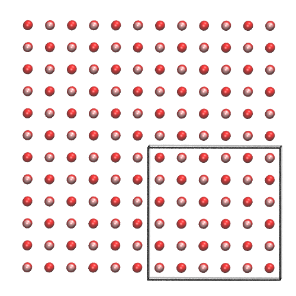
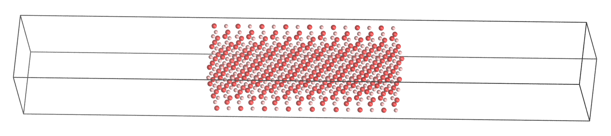
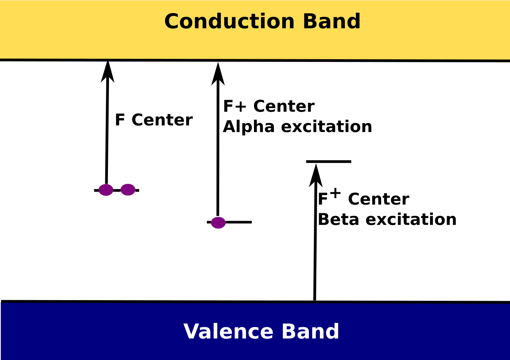

TDDFT¶
DFT normally thought of as ground state theory.
But, time dependent version actually has quite long history - it didn't really achieve prominence until Casida's reformulation caught on with Quantum Chemistry community.
TDDFT maps onto CIS and TDHF methods already well known in QC community, in similar way groundstate DFT -> HF .
Two main methods to solve the TDKS equations
- Linear-response Time Dependent Density Functional Perturbation Theory
- Real time propagation, see Florian Schiffmann's PhD thesis
both methods are available in CP2K.
We have been working on the Linear Response implementation.
Electron hole pairs¶
The transition density is a linear combination of $\color{red}{electron}-\color{blue}{hole}$ pairs
\begin{gather*} n_{j, \tau}^{(1)} = \sum_{j \in HOMOs} \left ( \color{blue}{\psi_{j,\sigma}^*} (r) \color{red}{\psi_{j,\sigma}^{(-)}(r)} + \color{red}{\psi_{j,\sigma}^{(-)*}(r)}\color{blue}{ \psi_{j,\sigma}(r)} \right) \end{gather*}
$$ \color{red}{\psi_{i, \sigma}^{(\pm)}(r)} = \sum_{k \in LUMOs} c_{ik, \sigma}\psi_{k,\sigma} (r) $$
$\color{blue}{\psi_{j,\sigma} (r) }$ contributes to the hole, $\color{red}{\psi_{j,\sigma}^{(-)}(r)}$ contributes to the electron.
- Each of the terms in the sum are single determinant excitation in Quantum Chemical language.
- in the ground state the $\psi_{j,\sigma}$ function would be fully occupied, but here density has be transferred to $\psi_{j,\sigma}^{(-)}(r)$ .
- The sum over all the HOMOs allows the hole to relax by mixing in other occupied orbitals.
- Typical transitions will be dominated by a single determinant - mixing of others gives orbital relaxation.
Implementation¶
We followed the original implementation of TDDFPT for semi-local functionals within CP2K (Thomas Chaissang's PhD thesis). But, ended up with complete rewrite.
It is activated within the
&PROPERTIESsection of&FORCE_EVAL- so can be used within MD or MC or single point calcs etc.XCsection is inherited from the ground state calculation.
Uses a standard block Davidson algorithm for iterative diagonalization of excited states.
Gaussians and Plane waves¶
For hybrid functionals we add in an extra term that comes from the response of the exact exchange part of the functional.
With hybrid density functionals the original action functional becomes a mixture of the TDDFT outlined above and TDHF.
- The coulomb interaction in standard functionals actually becomes an exchange like term, dependent on wavefunction overlap between the electron and hole.
\begin{gather} \mathbf{K_{\nu \mu \sigma}} = \big{<} \phi_{\nu} \big{|} \sum_{\tau=\alpha, \beta} \big{[} \color{red}{\int_{r'} \text{d}r' \frac{n_{j, \tau}^{(1)} (r')}{\mid r' - r\mid}} + f_{XC,\sigma,\tau} (r,r';\pm \omega)) n_{j, \tau}^{(1)} (r') \big{]} \big{|} \phi_{\mu} \big{>} \end{gather}
\begin{gather*} \color{red}{ n_{j, \sigma}^{(1)} (r) = \sum_{j \in HOMOs} \left ( \psi_{j,\sigma}^* (r) \psi_{j,\sigma}^{(-)} (r) \right) + \left ( + \psi_{j,\sigma}^{(-)*}(r) \psi_{j,\sigma}(r) \right) } \end{gather*}
Semi-local functionals have incorrect long-range behaviour because of this - well known underestimation of charge transfer states.
Semi-local terms - grids¶
Semi-local DFT terms are calculated on realspace multigrids
\begin{gather} \mathbf{K_{\nu \mu \sigma}} = \big{<} \phi_{\nu} \big{|} \sum_{\tau=\alpha, \beta} \big{[} \color{red}{\int_{r'} \text{d}r' \frac{n_{j, \tau}^{(1)} (r')}{\mid r' - r\mid} + f_{XC,\sigma,\tau} (r,r';\pm \omega)) n_{j, \tau}^{(1)} (r')} \big{]} \big{|} \phi_{\mu} \big{>} \end{gather}
- first red term is a potential that arises from the transition density
\begin{gather*} n_{j, \tau}^{(1)} = \sum_{j \in HOMOs} \left ( \color{blue}{\psi_{j,\sigma}^*} (r) \color{red}{\psi_{j,\sigma}^{(-)}(r)} + \color{red}{\psi_{j,\sigma}^{(-)*}(r)}\color{blue}{ \psi_{j,\sigma}(r)} \right) \end{gather*}
- 2nd term is the 2nd functional derivative of the GGA part of the functional $$ \color{red}{f_{xc}(r,t; r',t') ≈ δ(t − t')\frac{\delta^2 E_{xc}^{LSDA/GGA}[n]}{ \delta n(r,t)\delta n(r',t')}_{n(r,t)=n^{(0)}(r,t)}} $$
For each trial vector this looks like a normal KS build.
Hybrid functionals¶
the exact exchange energy term in the ground state functional becomes a coulomb type interaction between the electron and hole density for each excitation.
\begin{gather} \mathbf{K_{\nu \mu \sigma}} = \big{<} \phi_{\nu} \big{|} \sum_{\tau=\alpha, \beta} \big{[} \color{green} { c_{HF} \frac{K(r,r')}{ {\mid r' - r\mid}}} + \color{red}{ \int_{r'} \text{d}r' \frac{n_{j, \tau}^{(1)} (r')}{\mid r' - r\mid}} + \color{green}{(1-c_{HF})} f_{XC,\sigma,\tau} (r,r';\pm \omega)) n_{j, \tau}^{(1)} (r') \big{]} \big{|} \phi_{\mu} \big{>} \end{gather}
where the symbolic $\color{green}{K(r,r')}$ operator exchanges electrons, like in HF theory. In this case operating on an exchange type term, it gives an electron-hole coulomb interaction. Symbollically, terms of the form:
$$ \color{green}{ \big<\psi_{HOMOS} (r) \psi_{HOMOS} (r) \big| { \frac{1}{\mid r' - r\mid}} \big| \psi_{LUMOS} (r') \psi_{LUMOS} (r') \big> } $$
Note this is like a coloumb interaction screened by an effective dielectric function equal to $\color{green}{c_{HF}^{-1}}$.
Hybrid terms - gaussians¶
Because of the exchange, it is not possible for the added exact exchange term to be calculated on the grids with iterative diagonalisation:
- Hybrid term is calculated analytically using the existing hybrid functional routines in CP2K
- access to fast ADMM approximation (x1000 speed up for some basis sets)
- works for ADMM with no purification
- works for global hybrids - tested for B3LYP and PBE0
Still looks like standard KS build - but no screening on initial $\mathbf{P}$.
Parallelization and optimization¶
- Each KS build for trial vector is independent - parallelize over groups.
- But - need to diagonalize approximate H, and orthogonalize guess vectors - limits to few groups.
- Reduced PW cutoff - excitations mainly around valence states, much smoother than semi-core
Aside - Tamm-Dancoff approximation¶
only the Tamm-Dancoff approximation to TDDFT is implemented in CP2K at the moment.
In this approximation $\phi^{(+)}_{j\sigma} (r) = 0$ and the equations simplify and become Hermitian.
Hopefully fairly well separated - so full TDDFT can be implemented.
Oscillator Strengths¶
Oscillator strengths calculated using either
the position operator form of the dipole interaction operator, which is valid for non-periodic systems
the velocity operator form of the dipole interaction operator
Berry Phase polarisation, following Bernasconi, Sprik and Hutter, CPL, 2003
MgO benchmarking¶
|  |  linear scaling with number of states for full TDDFPT |
MgO surface slab system¶
 PBE |
 PBE0 |
MgO bulk defects¶
|
Independent particle adsoprtion spectrum 512 atom bulk supercell. $\Gamma$ point only (always in this presentation). |
 |
|
Broadened absorption spectra for canonical F centres in MgO. Dielectric function consistent PBE0 functional. |
MgO bulk defects¶
|  |
The F$^0$ defect in MgO has strong absorption peaking at 4.85 eV from a transition between an S-like and a P-like state. The F$^{+1}$ defect in MgO has a lower energy absorption peak at 4.70 from excitation of an alpha spin electron in a gap-state into CB states and a higher energy peak at 5.26 eV which comes from excitation of beta spin electrons in VB states into the unoccupied state in the gap. |
Example - porphyrin derivative on NaCl¶
 |
 |
- 960 atoms of NaCl
- 1031 atoms total
- TZV2P basis on molecule
- DZVP basis on NaCl
- 11790 Cartesian basis functions
- 7898 electrons
- ~2 hours on 192 cores to converge 10 lowest transition energies (12 iterations)
TDDFPT:¶
experimental peaks according to the Philipda Luangprasert's Master Thesis: 2.2 eV (small), 2.95 eV (broad, main), 3.3 eV (small);
PBE-D3: 2.37/2.40 (medium), 2.60 (medium), 3.22 (small);
B3LYP-D3 (using PBE-D3 optimal geometry): 2.19 eV (small), 3.23 eV (medium), 3.41 eV (medium), 3.78 (small).
The structure of the UV spectrum is well reproduced, but the last 3 excitation energies are overestimated by approximately 0.4 eV. This shift is probably due to unoptimised molecular structure (it was optimized using the PBE-D3 xc-functional, not B3LYP-D3) and/or the lack of diffuse basis functions.
Timings:¶
- TDDFPT/PBE-D3:
- CPU Time: 956957 s = 265.8 core*hours (4.0 kAU);
- MPI Wait: 45884 s = 12.7 core*hours (0.2 kAU);
- TDDFPT/B3LYP-D3/ADMM [Zn] cFIT9, [H,C,N,O] cFIT3, [Na,Cl] cFIT3 with 2 the most diffuse functions removed:
- CPU Time: 1517936 s = 421.6 core*hours (6.3 kAU);
- MPI Wait: 106947 s = 29.7 core*hours (0.4 kAU);
- TDDFPT/B3LYP-D3/ADMM [Zn] cFIT9, [H,C,N,O,Na,Cl] cFIT3:
- CPU Time: 3511819 s = 975.5 core*hours (14.6 kAU);
- MPI Wait: 185165 s = 51.4 core*hours ( 0.8 kAU);
maximum deviation in excitation energies with respect to the ones computed using the reduced auxillary basis set: 0.05 eV .
Excited states during MD of TiO$_2$ surface¶
Bulk TDDFT vs KS energies |
Bulk vs $\big{<}110\big{>}$ surface TDDFT |
HOMO-LUMO gaps and lowest energy excitation from ~2 ps simulation of Rutile TiO$_2$ bulk and surface.
Linear response summary¶
- gives electron transitions and detailed information on the types of transition
- cost will depend on system size, but increase linearly with the number of excited states that you want to calculate
- supports calculations using hybrid functionals and the ADMM approximation
- current implementation is still in beta, but is being actively developed.
- nearly production ready, needs final testing and refining - it is available in the latest developers version of CP2K via sourceforge or github
Also delta SCF method (Maximum overlap method implemented)
Maximum Overlap Method¶
is a delta-SCF method.
We project new orbitals onto previous ones $$ \mathbf{O} = \mathbf{C^{new} S C^{old}} $$
we then occupy the orbitals that are most like the previous iterations occupied orbitals.
By choosing some intitial set of occupations we can then try to self-consistently converge an excited state.
MOM force and hessians are available.
It doesn't work very well ...
Transport¶
We have also implemented a basic version of NEGF transport inside CP2K.
Thanks To¶
- ARCHER and EPSRC for funding.
- Jurg Hutter and the CP2K developers group.
- Iain Bethune, STFC.
- Materials Chemistry Consortium!
- Scott Woodley for helping organise this conference!